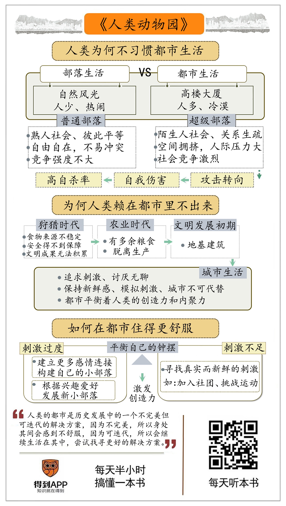

人类动物园
Table of Contents
- author
- 德斯蒙德·莫利斯
- want to read
- 1st

我为何选择待在大城市？
追忆人类历史时，总是从几千年前的城市文明时代开始，而忘记此前百万年的部落时期。
从体质上看，两万年前，冰河时代祖先的脑容量、颅骨构造和我们几乎没差别。
农业时代开始，人类第一次获得了定期可靠的剩余食物。19 世纪 60 年代，人类第一次出现生产大于消费。
从部落到超级部落，人不再认识社区里的所有人。
城市运行发展必然依赖非本地产品，须用贸易或征服拓宽供应渠道。
语言的反交流功能和交流功能几乎同等重要。
凝聚力要素：法律、风俗、语言、宗教、战争。
从动物学的角度来说，罗马人已经进入现代状态。诚然，在以后的千百年里，故事情节越来越复杂了，但基本上还是老样子——人口更密集、精英更精明、技术更发达；城市生活的挫折和压力更加严重；超级部落的冲突更加血腥。人太多了，这就是说，有人能空闲出来，有人能被浪费。人际关系在大群体里消失了，人越来越冷漠，与此同时，人对人的非人道行为多到了恐怖的程度。然而正如之前所说，冷漠的人际关系并不是生物学上的人际关系，所以这并不奇怪。奇怪的是，膨胀的超级部落居然存活了下来，而且还活得很好。这不是我们稳坐在20世纪就应该轻松接受的，这是我们应该惊叹的事实。这是一个令人惊叹的证据，说明我们这个物种有着令人难以置信的创造才能、坚韧意志和可塑潜能。我们究竟是怎么做到的？作为动物，我们只有一套在长期的狩猎生活里演化出来的生物学特征。答案必定隐藏在这一套生物学特征里，以及我们能够利用和操弄它们的方式，使之不至于像表面上看上去那样严重地扭曲这些特征。我们必须要更加仔细地审视这些特征。
超级部落产生超级领袖，相比而言，他们行使权力时使昔日猴王显得像仁慈的君主；同时还以奴隶的形式产生了超级下属，奴隶表现出的极端形式的屈从使最卑贱的猴子的服服帖帖都相形见绌了。
同情、和蔼、互助，部落内合作的基本冲动必定是早期人群的行为模式，这有助于他们在危险的环境中生存。部落膨胀为冷漠的超级部落以后，古人的行为模式才在压力下开始瓦解。到那时，人为的法律和戒律才必须要强加于人，以矫正失衡的天平。
正如竞争与合作有冲突一样，从众和创新也存在着斗争。唯有在城市里，持久的创新才有真正机会。只有城市足够强大和稳定，能够容忍颠覆性的原创性和创造性产生的破坏力量。反传统的利剑劈在巨人的身上时，那只不过是小芒刺、挠痒痒，给它一种舒服的刺痛感，把它从睡梦中唤醒，敦促他行动。
地位展示功能。
印记与错误烙印，动物在非自然环境下可能会出现假性关系，鸭子幼崽在孵化后不久错将稍大一点的物品当作母亲跟随，比如气球，动物园里没接触过异性的动物可能不会对同类异性有性倾向。
1. Question
- 书里会提到规模效应吗？ No.
2. Others
- 裸猿
- 亲密行为